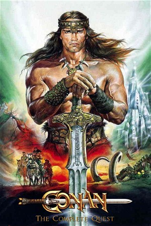

Conan the Barbarian Collection (1982)
AdventureFantasyAction
| Year | 1982 |
|---|---|
| Type | BoxSet |
| Genre | Adventure, Fantasy, Action |
Conan the Barbarian, (also known as Conan the Cimmerian), is one of the key characters in the Swords & Sorcery / Fantasy genres. This collection includes the theatrical releases of the Conan titles.